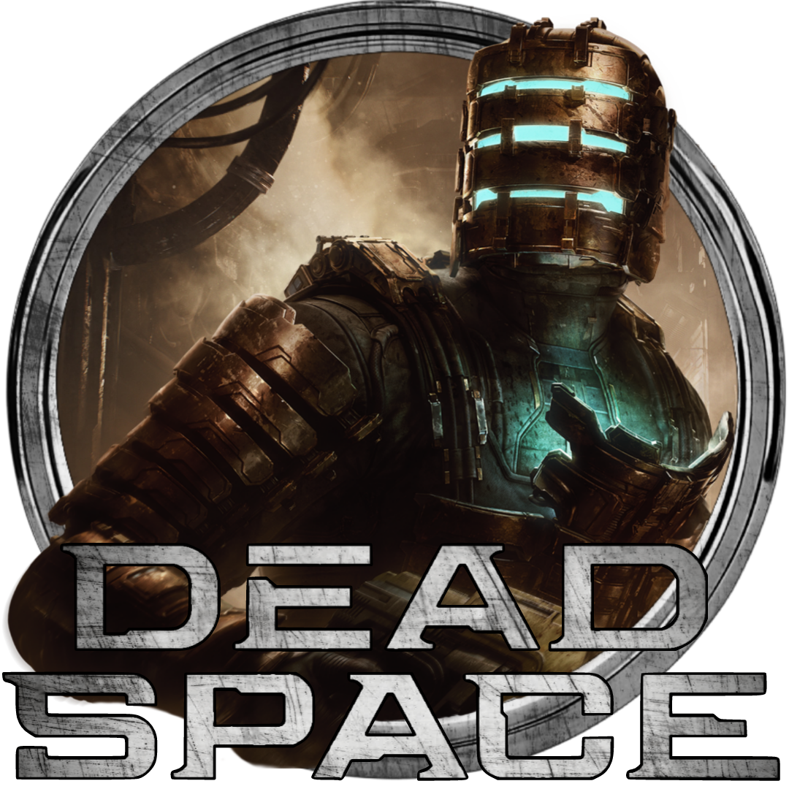

 Dead Space Remake
Details
 |
|
| Playtime | Not Played |
| Last Activity | Never |
| Added | 4/30/2025 7:18:15 |
| Modified | 4/30/2025 7:20:43 |
| Completion Status | Not Played |
| Library | Playnite |
| Source | |
| Platform | $PC (Windows) |
| Release Date | 1/27/2023 |
| Community Score | 89 |
| Critic Score | 89 |
| User Score | |
| Genre | Shooter Survival horror |
| Developer | Motive Studios |
| Publisher | Electronic Arts Limited Run Games |
| Feature | Controller Support Full Controller Support HDR Ray Tracing Single Player |
| Links | PCGamingWiki Official site HowLongToBeat IGDB SteamDB MobyGames Wikipedia |
| Tag | Action Action-Adventure Adventure Aliens Atmospheric Blood Combat Dark Horror Psychological Horror Remake Sci-fi Shooter Singleplayer Space Survival Survival Horror Third Person Third-Person Shooter Violent |
Description
Dead Space is a science fiction horror franchise created and directed by Glen Schofield. Dead Space was developed by Visceral Games and published and owned by Electronic Arts. The franchise's chronology is not presented in a linear format; each installment in the Dead Space franchise is a continuation or addition to a continuing storyline, with sections of the storyline presented in prequels or sequels, sometimes presented in other media from the originating video game series, which includes two films and several comic books and novels.
Primarily set in a 26th century science fiction universe featuring environments, weapons, and characters typical of the genre, the Dead Space franchise centers on a series of video games beginning with the release of the first Dead Space, which centers on starship engineer Isaac Clarke and mutated undead horrors that surround him. A central theme in the games is the fictional cult religion "Unitology" and its fanatical adherents, who believe that information about an alien artifact called the "Marker" is being suppressed by "EarthGov", the central political administration of Earth. Their primary goal is to use the Marker as a means to bring about the "Convergence", or complete destruction of humanity, with the Marker and its malevolent influence being the source of the undead monsters encountered by the series' protagonists.
The Dead Space video game series has been positively received; the first game in particular won a number of industry awards for the varied elements of its gameplay and development, and is often regarded as one of the best video games of all time by critics. From a commercial perspective, EA considered the video game series as a whole to have underperformed. After the financial disappointment of 2013's Dead Space 3, no further media for the franchise was produced until a remake of the first game was developed by Motive Studio and released on January 27, 2023.
Media
Main series
Dead Space
Systems engineer Isaac Clarke joins a search and rescue team for the USG Ishimura, which had gone radio-silent, after receiving a message from his girlfriend Nicole. Their ship suffers damage when attempting to dock with the Ishimura; while the rest of the crew assess the situation and search for a means to leave the Ishimura, Isaac explores the ship to look for Nicole. The ship is overrun by Necromorphs, forcing Isaac to defend himself by weaponizing his mining tools and "Resource Integration Gear" (RIG) spacesuit capabilities. Due to the Red Marker's influence, Isaac experiences recurring visions of Nicole, who guides him to return the Marker to the planet. Towards the end of the game, it is revealed that one of the rescue team members, Kendra Daniels, is a double agent. She betrays Isaac, but is killed by a large Necromorph creature before she can escape, while Isaac commandeers her ship and escapes Aegis VII after defeating the creature and allowing the Marker to be destroyed by a sabotage attempt he had initiated earlier. The sole survivor of the entire ordeal, Isaac soon hears something behind him and looks back to see a horrific hallucination of Nicole.
Dead Space 2
Dead Space 2 reveals that Isaac has become mentally disturbed and unstable after he destroyed the Red Marker on Aegis VII, and that he was captured by EarthGov and taken to the Sprawl, a massive space-station built into the remains of Titan, Saturn's largest moon. Once there, EarthGov scientists extract information from his mind to build another Marker, and he is later confined to a hospital on the Sprawl due to a dementia-like mental illness caused by the first Marker. A Necromorph outbreak in the Sprawl instigated by the Marker copy soon occurs, thrusting Isaac into a struggle to survive the Necromorph epidemic. Haunted by hallucinations of the deceased Nicole Brennan, Isaac manages to destroy the Marker copy and undo its influence on his mind. Isaac succeeds in escaping with another survivor, Ellie Langford, before the explosive destruction of the station, and goes into hiding from EarthGov authorities as his mind still retains information about the Markers.
Dead Space 3
Dead Space 3 occurs a few years later. While Isaac Clarke and Ellie Langford returned to Earth and dated for a while, their relationship fell apart. As he is struggling with the breakup in his apartment on the moon, Unitologists led by Jacob Danik activate a Marker near the colony, causing a Necromorph outbreak. Isaac is rescued and enlisted by EarthGov soldiers to help locate Langford, who had traveled to Tau Volantis, one of Earth's oldest off-world colonies, in search of the true origins of the Markers and a means to stop the Necromorph scourge once and for all.
Dead Space remake
Rumors of a revival of Dead Space within EA appeared in early 2021. Venture Beat reported in July that this revival was a remake of the first game, in the same vein as the Resident Evil 2 remake, and would be a relaunch of the franchise. EA confirmed the remake of Dead Space, under development by Motive Studio, in their EA Play event the same month. It was released on January 27, 2023.
Setting
The Dead Space franchise is set in the future, where humanity has been able to colonize other planets. By the 23rd century, humanity has used up most of Earth's natural resources, and the world governing body, EarthGov, has fleets of "planet crackers", giant mining spaceships that harvest resources by breaking apart other planets, to gather materials for humanity to sustain itself. During the 23rd century, EarthGov researchers find a double helix-shaped alien artifact in the Chicxulub crater, which they call the Marker. The Marker emits a persistent electromagnetic field from seemingly no source, which researchers believe could be used to provide limitless energy and solve Earth's ecological crisis. Work begins to reverse engineer the Marker on various research stations across the colonies, but they are forced to use bismuth instead of an unidentified alien material, resulting in these duplicates being colored red instead of black as the original.
The project was highly classified, but the lead researcher Michael Altman leaks its existence to the world. EarthGov assassinates Altman hoping to quell the news, but it is too late: Altman is seen as a martyr, and his belief of what the Marker means for humanity form the basis of a new cult-like religion, Unitology, that rapidly spreads across Earth and the colonies. Unitologists believe that by worshipping the Marker, they will discover the true origin and meaning of human life. They also believe that the Marker grants eternal life and will help to unify humanity, as to "make us whole", in an event known as the "Convergence".
The EarthGov researchers also discover that the electromagnetic fields sent by the Marker and its duplicates cause living people to suffer paranoia and hallucinations, while also causing the dead to reanimate, becoming "Necromorphs", biological monstrosities which rise to attack the living. EarthGov immediately terminates the Marker project and abandons all research stations where the work had been done, covering up their locations, knowing as they do that the followers of Unitology would desperately want to seek these Markers out in order to advance their beliefs and bring about Convergence.
In the 26th century, a planet-cracker vessel mining the world of Aegis VII called the USG Ishimura discovers a Red Marker buried near an abandoned colony. The Ishimura captain, a devout Unitologist, ordered his crew to bring the Marker aboard the ship, which causes the crew to become paranoid, turn on each other, and leads to a Necromorph infestation onboard the Ishimura. Among the crew of the Ishimura is a medical officer named Nicole Brennan, who sends a cryptic distress signal to her significant other out of desperation.
Gameplay
The Dead Space games franchise follow the survival horror genre, with the player character visible at all times. All menu interfaces are diegetic, produced by the character's "Resource Integration Gear" spacesuit for ease of communication with other characters. For instance, the character's hit point meter, built into the spine of his suit, is intended to allow co-workers to monitor his health, and when the character moves into depressurized areas, a readout on his back displays his remaining seconds of oxygen. All sound is removed from gameplay during these segments, save those which would be transferred to the character's ears by the vibrations of his RIG, such as rounds fired from his weapon. Since the menus are diegetic, opening them does not pause gameplay.
The character's RIG can be outfitted with two special abilities for use in combat and puzzle-solving. The "Kinesis" module allows the character to retrieve, levitate and transport objects, often heavier or more distant ones than could be accessed normally. These objects may also be expelled at high speed for use as improvised projectiles. The "Stasis" module causes its target to undergo an extreme slowdown for a short period of time, allowing characters to dart through rapidly moving obstacles such as fan blades, or hinder onrushing enemies. The RIG also has a slot-based inventory for carrying weapons, ammunition, healing items, and other objects.
Gunplay is influenced by the franchise's antagonists. Because Necromorphs are re-animated and re-purposed corpses, lacking dependence on nervous, respiratory, and circulatory systems, the conventions of stopping power are largely irrelevant to them. Thus, instead of targeting foes' heads or center of mass, players are encouraged to engage in "strategic dismemberment" by shooting off their arms and legs. Some Necromorphs can be easily defeated in this manner, but others may change attack patterns or even spawn entirely new enemies when slain. Relatedly, the game's weapons are characterized as being repurposed power tools or mining implements, such as plasma cutters, rotary saws, and gravitic repulsion tools, though an increasing amount of dedicated military ordnance becomes available as the franchise progresses. Ammunition tends to be uncommon, thus necessitating careful usage of the tools at hand.
In the first two games, RIGs and weapons can be upgraded at bench workstations. Players can also visit vending machines to buy or sell items for in-game currency, and upload new schematics to those stores in order to unlock new items. This was changed in the third installment, where the store was scrapped entirely; new "Suit Kiosks" allow the player to upgrade their RIG, and bench functionality was expanded to allow players to craft their own weapons, often by cobbling together parts and resources scavenged through gameplay.
Each type of Necromorph has a unique way of slaying the player character, customized to whatever claws, blades, fangs, or probosces they happen to possess.
Development
Electronic Arts (EA) Redwood Shores had developed a number of movie and tie-in games, though they desired to make their own intellectual property. Around 2005, the studio presented the idea of making a second sequel to System Shock to EA executives but had not gotten much support until the release of Resident Evil 4 in 2005, which quickly became a top-selling title. That success led them to revise their System Shock concept, making it more a horror-driven game set in space, and which EA was more open to as to try to capture a similar type of success. The aim was to create, in Glen Schofield's words, "the most terrifying game we could acquire". The subsequent game became Dead Space, released in 2008. Dead Space did well, leading EA to rebrand Redwood Shores as Visceral Games in 2009 and operate as a "genre" studio.
During the development for Dead Space, EA Redwood Shores (now Visceral Games) gave Isaac a portmanteau name from the science fiction writers Isaac Asimov and Arthur C. Clarke. During development for Dead Space 2, Visceral Games decided to give Isaac a voice and chose Gunner Wright. As Wright's performance was motion captured, this influenced Clarke's appearance and movement in the game.
The concept behind the fictional religion of Unitology, which has its own scripture of some kind, is supposed to represent people's illogical thinking about things they don't understand, such as the Marker and the Necromorphs. While it is not meant as a criticism of religion itself, it draws on the falsehoods and corruption that may be hidden inside one. In response to comparisons which have been made by commentators between the fictional Unitology and the real-world Scientology, the developers have stated that they simply meant to portray Unitology as a secretive cult, with the name similarity causing unfortunate implications.
While Visceral tried to recreate a similar experience with Dante's Inferno, the title did not perform as well, and EA instead had Visceral return to make the sequel Dead Space 2, released in 2011. While it was critically well-received, the title was said to have not performed well financially due to a large development budget. EA had Visceral continue to make Dead Space 3, but asked the studio to make key changes to draw more people to the title, such as adding co-op and introducing gameplay elements to help make the title faster, an aspect in direct conflict with the slow pacing of survival-horror games.
Visceral had planned out ideas for a fourth Dead Space game, but at that point, EA transitioned the studio to work on other existing projects, shelving the series after the developer's closure in October 2017. According to former creative director Ben Wanat, their idea of Dead Space 4 was based on concepts from the flotilla section in Dead Space 3, where the player would need to go between the remnants of dead starships to collect parts needed to allow their own craft to survive and gain faster-than-light travel abilities in order to get to a new system. The game would have been a hybrid between non-linear and linear storytelling: while the order of star systems the player visited would have been set by the game, how they proceeded within each system would have been more open. They had considered switching from Isaac to Ellie Langford as the protagonist for the proposed sequel.
In July 2021, EA announced that a remake of the first game with its proprietary Frostbite Engine was under development by Motive Studio.
Music
Jason Graves was the main composer of the music for all mainline entries in the series and the majority of spin-off titles. Other composers have been involved in the series; Grave's recurring collaborator Rod Abernethy acted as an early advisor for the titular first game, James Hannigan co-composed the score for Dead Space 3, while Seth Podowitz and Christopher Tin were the respective composers for the movies Dead Space: Downfall and Dead Space: Aftermath.
Major characters
Isaac Clarke
Isaac Clarke is the lead character of the Dead Space main series video games. Originally a ship system engineer, his life changes for the worse when a seemingly-routine repair mission becomes a struggle to survive the Necromorph scourge. He originally volunteered the mission to make contact with his girlfriend, who is stationed on the USG Ishimura. Clarke is a silent protagonist in the first game, and is voiced by Gunner Wright in the sequels and the first game's remake.
Nicole is a medical officer aboard the USG Ishimura and Isaac's girlfriend. She appears at Isaac's side at times of struggle, but later logs reveal that she committed suicide long before Isaac arrived; her appearances have actually been hallucinations created by the Markers with the intent of manipulating Isaac into furthering their agenda. She appears in a similar guise over the course of the second game, serving as a sympathetic antagonist. She is voiced by Iyari Limon in the first game and Tanya Clarke in the second.
Nolan Stross appears in Dead Space 2 and is one of the protagonists in the animated feature Dead Space: Aftermath. Stross was once a high-ranking scientist but suffered from dementia after coming into contact with the Red Marker, and was placed in a psychiatric ward of a hospital on Titan Station. While he and Isaac Clarke attempt to band together to destroy the Marker causing the events of the second game, his madness gets the better of him, and Isaac is forced to kill him. He is voiced by Curt Cornelius. Like Isaac Clarke, the character is named after two science fiction authors, in this case, William F. Nolan and Charles Stross.
Ellie is a major non-player character in Dead Space 2 and Dead Space 3. In the first sequel, she and Isaac work together to escape the Titan Sprawl, and between the two games, they begin a romance. However, by the time of the second sequel, they have separated, partially because Isaac is hesitant to wager his life stopping the Markers. Ellie, with the help of Earth Defense Force Captain Robert Norton, discovers evidence that the planet Tau Volantis is the Marker homeworld; she sends Norton to recruit Isaac, kicking off the events of the third game. She is voiced by and modeled after actress Sonita Henry.
Sgt. John Carver is a character in Dead Space 3, and the protagonist of the tie-in graphic novel Dead Space: Liberation. The graphic novel depicts his past as a loyal EarthGov soldier with troubled home life. Damara and Dylan, his wife and son, are killed by Dead Space 3 antagonist Jacob Danik, and Carver joins forces with Ellie Langford to prevent Danik from triggering Convergence. He is voiced by and modeled after Ricardo Chavira.
Under normal circumstances, Carver is a non-player character, dispensing advice and guidance to Isaac but not assisting in gameplay. However, Dead Space 3 features "drop-in drop-out" co-operative multiplayer: the game's single-player campaign can at any time become a co-operative experience if a second player joins via Xbox Live or other networking services. If a second player does join, Carver is that player's in-game character; as such, he is seamlessly written in and out of the campaign at any time to facilitate the presence (or absence) of said other player. Additionally, if a second player is present, side missions become available that deal with Carver's guilt concerning the way he treated his family, as well as over their deaths.
Adaptations
The Dead Space franchise includes various types of adaptations and merchandise outside of the video games. EA's multimedia efforts to market the franchise includes novels, comic books, animated films, and other licensed products like action figures of series protagonist Isaac Clarke.
Print media
Comic books
The Dead Space franchise has been adapted into literary format, beginning with a comic book miniseries which serve as a prequel to both the first Dead Space game and the Dead Space: Downfall film. It was written by Antony Johnston, illustrated by Ben Templesmith and published by Image Comics between March and August 2008.
Other published literary works from the franchise include the 2010 comic book Dead Space: Salvage by Antony Johnston, and follows a band of ill-fated scavengers known as the Magpies who discover the seemingly abandoned mining ship USG Ishimura following the events of the first game.
Novels
Dead Space: Martyr by B. K. Evenson is a 2010 novel which explores the origins of Unitology as well as the initial discovery of the original Black Marker by humanity. Set roughly 200 years before the events of the video game series, Martyr tells the story of geophysicist Michael Altman, who discovers a mysterious signal within the Chicxulub crater and after secretly obtaining a piece of the Marker, leaks it to the public and spreads the visions he received from it.
The second novel by Everson, the 2012 Dead Space: Catalyst, is set two hundred and fifty years after the events of Martyr, where EarthGov decides to tamper with dangerous technology from the Black Marker in the hopes of saving humanity from an energy and resource crisis.
Reception
The main series Dead Space games have been critically acclaimed. The first Dead Space in particular is often considered to be one of the greatest video games of all time, with its innovations in the survival horror genre highlighted. In an article on the series from 2018, Game Informer said the title stood out for its unique gameplay gimmicks and atmosphere compared to other video games of the time. Magazine Play, in a 2015 feature on the game's production, said that Dead Space distinguished itself by incorporating more action elements into established genre elements, and positively compared its atmosphere to BioShock from 2007 and Metro: Last Light from 2013. In a 2014 article concerning the series' later developments, Kotaku cited it as "one of the best horror games of the seventh generation of consoles".
At release, Dead Space reached tenth place in North American game sales, compiled in November by the NPD Group. Recording sales of 193,000 units, it was the only new property from EA to enter the top ten rankings. In early analysis, low sales of the title were attributed to strong market competition at the time, though sales improved over time due to positive critical reception. By December 2008, the game had sold 421,000 units across all platforms, but was still considered a commercial disappointment when taking into account its extensive marketing costs. Electronic Arts CEO John Riccitiello revealed that the company would have to lower its expected income for that fiscal year due to multiple commercial disappointments like Dead Space. In February 2009, Electronic Arts CFO Eric Brown confirmed that all versions of Dead Space had sold one million copies worldwide.
Dead Space 2 has also received near-universal acclaim across all release platforms, with some reviewers comparing the game's relationship with its predecessor to James Cameron's Aliens and its predecessor Ridley Scott's Alien. While Electronic Arts reported seemingly strong sales figures for Dead Space 2 when it shipped nearly 2 million units in the first week of its release, these were considered financially disappointing.
Dead Space 3 received a less enthusiastic critical reception compared to its predecessors, though reviews are generally favorable. It sold 605,000 copies in North America during its debut month. In both the United States and the United Kingdom, Dead Space 3 was the top-selling game in February 2013. In spite of this, the title failed to meet the company's sales expectations.
A fourth main series title was canceled as a result of the third entry's disappointing sales. With the closure of Visceral Games in 2017, the franchise was left without a managing developer. In an interview on the Here's Johnny podcast, Dead Space producer Chuck Beaver stated: "Dead Space 4 would have been about Isaac being a unreliable narrator having the player not know what was true or not". He went on to say "it would have been about Isaac either remaining the Herald for the Necromorphs or saving earth".
The franchise's spin-off titles, Dead Space: Extraction and the 2011 mobile game Dead Space, received generally positive reviews from critics, whereas reception towards Dead Space Ignition was generally unfavorable.